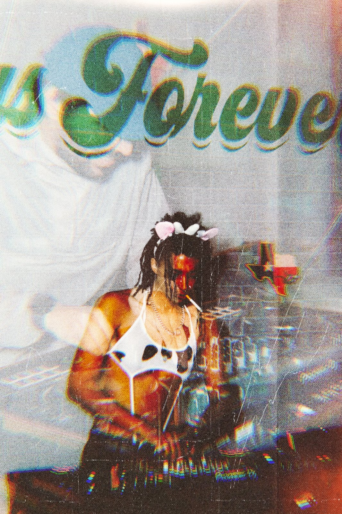
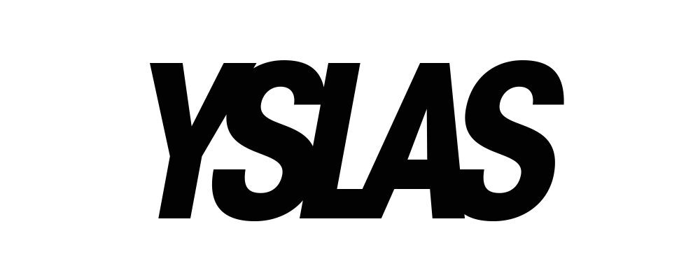
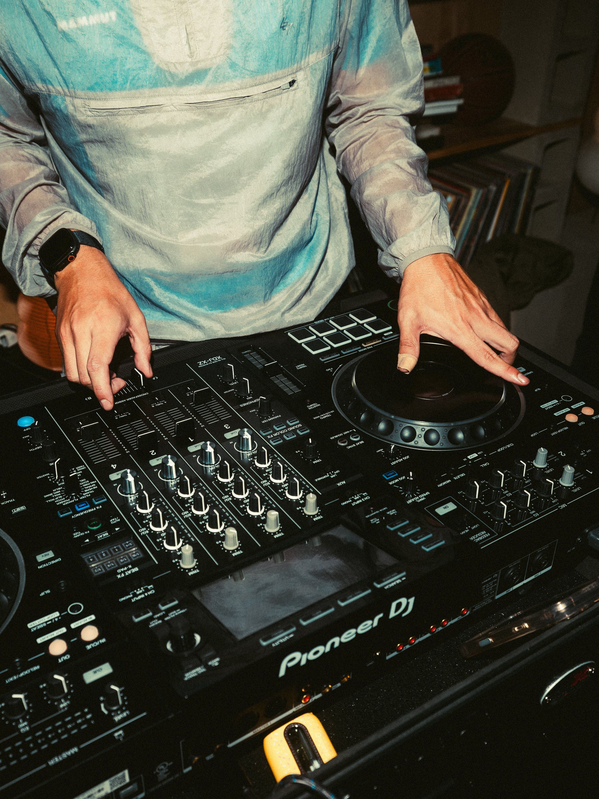
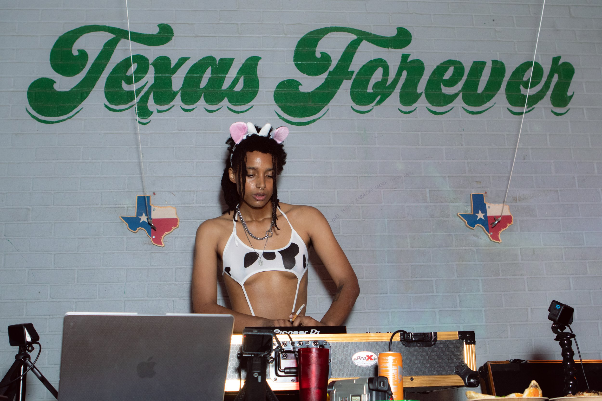
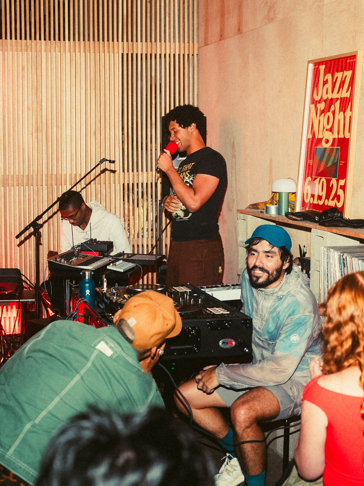
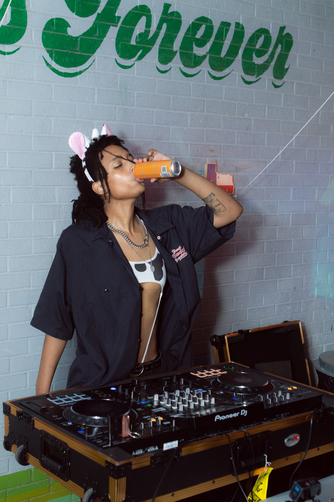
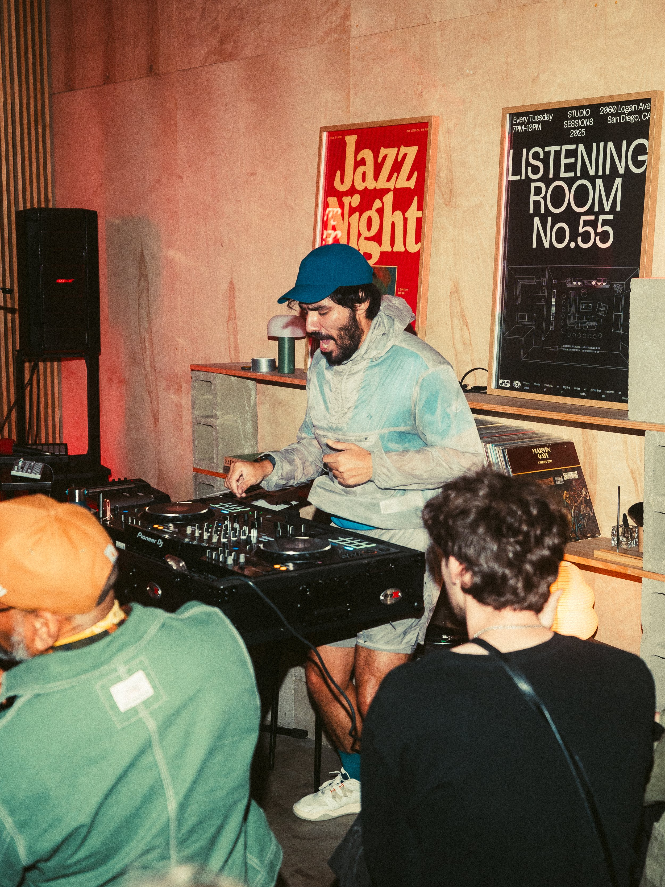
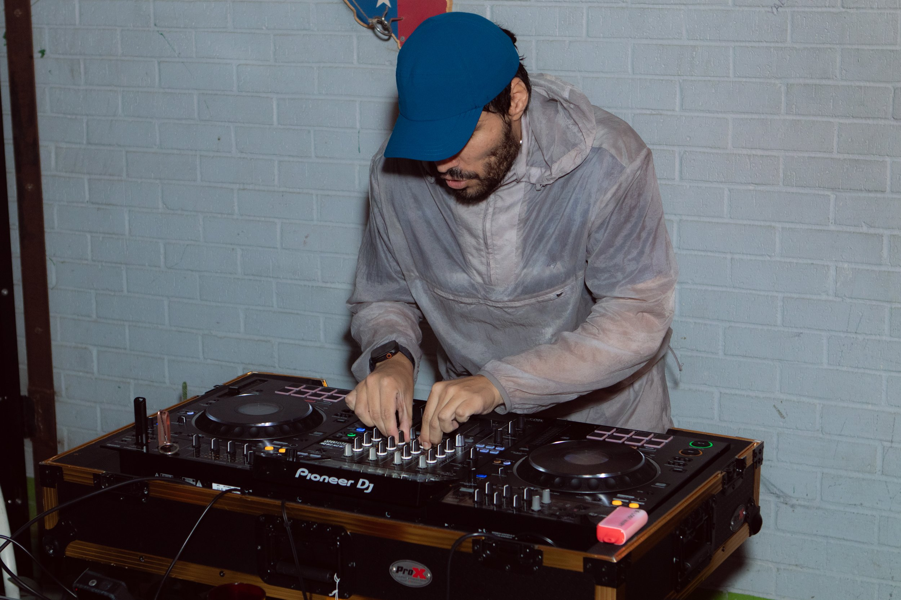

YSLAS is a DJ/VJ duo made up of BESO GNARLY and Vicki Outlaw, specializing in making visuals and delivering sonics where they curate liberatory spaces via the art of DJing and VJing. Their sets are primarily techno based, with forays of a multi-genre approach which travels from UKG to Latincore and beyond. They are based in California and Texas.
YSLAS has held residencies in Houston, TX and has DJ’d in Texas as well as California. They have worked with organizations and venues such as Two Headed Dog, Future is Color, Houston Arts Alliance, and more. They work with cutting edge technology like TouchDesigner, Ableton, MAX/MSP, PD and beyond to organize their experiential visuals and sets.
Vicki Outlaw is a transfemme black artist who champions inclusivity in their liberatory practices. BESO GNARLY, after a stint in ICE detention where he was incarcerated for 60 days, overlaps with Vicki’s goal in the project’s to aim their DJing ethos - to liberate the human body.

photo credits:
https://www.natasha-bermuda.com/
https://www.instagram.com/sanchez_productions/





